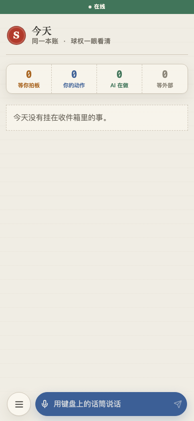
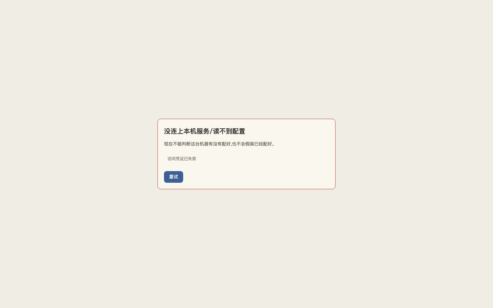

env=live localhost:47100 · HEAD bc2ac87 · live 走查 PASS 27(含窄屏补拍) · FAIL 0 · Playwright 夹具 9/25/34
发布阻断:无新的 live 产品阻断。Playwright 夹具 25 红仍是已知债,不挡本轮 live 验收。不能当 v0.1.0 发布锁。
人工确认事项
LAN Today(代表截图):

无 token 的 fail-closed:

清理:未 deploy,未写 pending 配置,未截配对二维码。文本烟测留下未命名草稿。